도형의 각도·크기·중심을 엇나가게 배치한 12안. 모서리와 끝, 안쪽 꺾임까지 둥글게 다듬었습니다.
R01–R12 · 단색 / 반전 / 흑백 그라데이션 · 총 36개
둥근 삼각형 둘 · 중심을 엇나가게
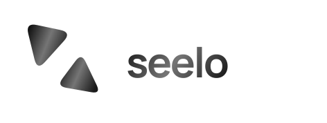
서로 다른 사각형 · 높이와 각도 차이
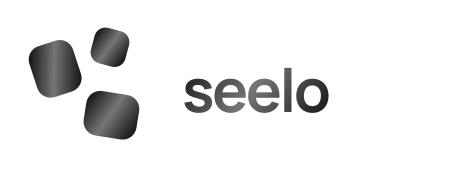
긴 모듈 셋 · 비평행 배열
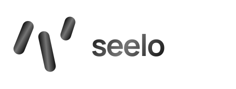
직각을 굽힌 두 덩어리 · 비대칭 간격
짧고 긴 둥근 면 · 각도를 벌린 적층
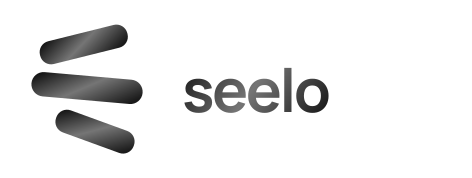
큰 곡면 삼각형 · 작은 사각형의 이탈
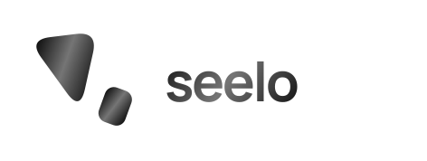
넓은 면 두 개 · 사선으로 어긋난 무게
둥근 삼각 모듈 · 크기와 회전의 차이
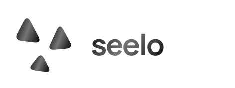
서로 다른 비율 · 격자를 벗어난 세 모듈
굵은 곡선 둘 · 다른 방향으로 휘어짐
엇갈린 모서리 · 큰 여백을 둔 대각 배치
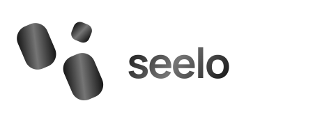
둥근 사다리꼴 · 길이와 방향의 변주
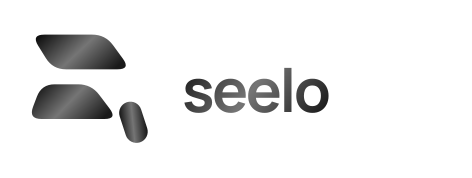
선택한 안이 없습니다. 필터를 끄고 번호 옆 체크박스로 골라주세요.